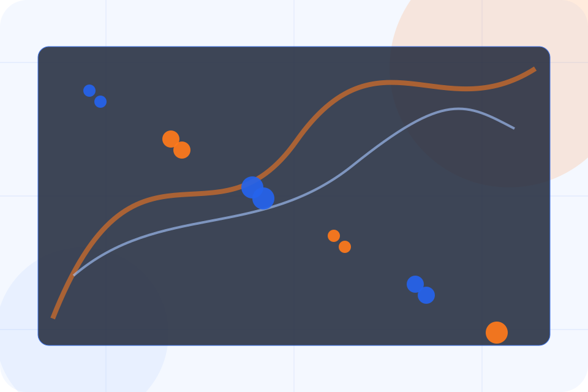

ASH-TRA static portfolio support
Privacy Notice
Chain collects only the details a visitor chooses to submit through static forms. Form delivery currently uses Formspree and contact routing may also use public ASH-TRA links.
Analytics events are designed to avoid names, email addresses, phone numbers, messages, health details, financial details, legal details, and other personal form content.
Server logs, static hosting records, form processors, and browser consent choices may process limited technical data needed to operate the site. Privacy requests should be sent through ASH-TRA contact routes, and the final client must review this notice before launch.